收录于合集
#比较政治学 121 个
#国家建构与国家发展 70 个
文献来源： Beramendi, P., Dincecco, M., & Rogers, M. (2019). Intra-elite competition and long-run fiscal development. The Journal of Politics, 81(1), 49-65.
作者简介：
Pablo Beramendi ，杜克大学政治学系教授，主要关注不平等与再分配的政治经济研究。个人网站参见：https://sites.duke.edu/beramendi/
Mark Dincecco ，密歇根大学政治学系助理教授，主要关注历史政治经济学和发展政治经济学。个人网站参见：https://sites.google.com/umich.edu/dincecco
Melissa Rogers ，克莱蒙研究大学国际研究系副教授，主要关注财税政策和空间经济不平等。个人网站参加：http://melissazrogers.com/
一、引言
进入21世纪后，国家财税占GDP比重高的国家可以达到40%，而占比较低的国家仅仅为10%，而直接税占税收总量的比重则在25%-80%间浮动。可以说，不论是在结构还是在规模上，现代国家的财税体系之间都有非常大的区别。那么我们应该如何解释这一差别呢？作者提出，精英竞争会促进财税规模的增加，以及直接税占总税收比重的增加。而早发工业化国家和后发工业化国家则会有完全不同的精英竞争水平。作者在现有数据的基础上构建了一个跨度为1870-2010年且包括31个国家的财税数据的数据集，并最终验证了这一理论。
二、理论框架
首先，作者构建了一个形式模型（formal model）来呈现精英竞争与税收决策之间的关系。设农业精英为A，资本主义精英为C。在工业化时代之前，农业精英一般属于社会中掌握政治权力的群体。工业化开始后，资本主义精英开始挑战农业精英的统治地位。在工业化的情景下，历史上精英群体要做两个关乎财税发展的抉择。第一个抉择是，要不要发展财税能力来支持新公共产品的提供（例如基础设施建设）推动经济生产力。如果精英们决定做这样的投资，那么第二个抉择就是如何为公共产品提供筹集资金。
在不进行任何决策的情况下，资本主义精英的收益为 。一般而言诸如基础设施建设这样的新公共产品会推动工业经济发展，有利于资本主义精英，作者将新公共产品建设后资本主义精英的收益定为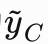 ，而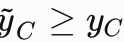 。
在早期工业化时代，工业发展会对农业有一种挤出效应。比如工农业对劳动力的争夺。因此农业精英的利益可能会因基础设施的修建而受到损害。作者用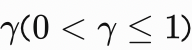 来表示农业精英因这种挤出效应所受到的生产损耗。在不做出任何决策的情况下，农业精英的收益为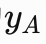 。
那么如何为新公共产品建设筹措资金呢。作者认为在早期工业化国家主要有四个税收来源，
一是传统的财产税，设为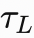 ；
二是贸易税，设为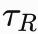 ；
三是直接税，主要是收入税，设为 ；
四是间接税，主要是消费税，设为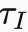 。
但这四种来源中，传统的财产税必须要负责国防支出和基本公共服务，因此难以再解决新公共物品提供的问题。
根据以上设定，我们可以从下图中看到工业和农业精英在不同决策下的收益。
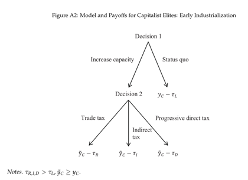
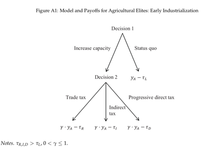
由上图可知，农业精英更不愿意支持发展财税能力的决策，因为在哪一个结果下他们的相对收益都下降了。资本主义精英则正相反，而且不论选择哪一种税收作为公共产品提供的财源，他们的收益都上升了。尽管资本主义精英想要让农业精英尽可能承担税收，但是在农业精英掌握政治权力的情况下，对不动产增税是不可能的，提高消费税在当时的技术和经济条件下也不可行，可行的选项还是从贸易税和直接税中获取收益。一般而言，在工业化初始阶段，高关税会有利于国内企业的发展。但是一旦企业生产率足够高，开始寻求国际市场，那么关税可能就成为了一种发展的阻碍。欧洲的平均关税在19世纪时就开始下降。考虑到高贸易税对工业发展的潜在阻碍，资本主义精英可能更倾向于增加直接税（主要是收入税）的提取。而一旦作出了这样的选择，其对财税能力的影响就会长期保留下来。由此，作者提出，在早期工业化国家中，精英竞争可能和直接税的重要程度呈正相关关系。
而在后发工业化国家中，农业精英可能和资本主义精英一样受惠于新公共物品投资的发展，而且工农业直接不再是一种零和竞争的关系。例如农机、化肥等工业品同样大大提高了农业生产力，铁路等基础设施则有利于初级产品外售。早发工业化国家也发展了复杂的铁路运输网，但主要是服务于原材料、工人和工业品的运输，对农产品销售的帮助有限。因此农业精英的收益在新公共物品投资的情况下上升为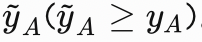 。在后发工业化国家中，财税来源更为多样，其中最有代表性的就是FDI，他们甚至可以不提升总体税率来进行新公共物品投资。而且在二战后，消费税等间接税大规模铺开的条件也已经成熟，大量汲取直接税不再成为唯一的选择。由此作者提出，在后发工业化国家中，精英竞争的激烈程度较低，总体税收水平较低，直接税在税收中的占比也相对较低。
根据这一理论框架，以及早发和后发工业国家的不同情况，作者提出两大假设：
1、精英竞争越激烈，政府税收提取的规模越大。
2、精英竞争越激烈，直接税占税收比重越大。
三、替代性解释
国家间战争
国家间战争是解释财税能力发展的最重要理论。学者们认为，为了支持战争，国家不得不发起行政改革来强化税收体系。从案例上看，尽管西班牙和瑞典都在两次世界大战期间保持中立，但是两国的财税规模和结构有很大差别。在美洲，阿根廷和智利都没有为世界大战进行广泛的动员，两国的财税能力也有很大差别。在后面的回归分析中，作者也将战争作为控制变量纳入模型中。也有一些学者把政体作为战争影响财税能力的中介变量，因此，政体也是回归模型中的一个重要控制变量。
左翼政府
有学者认为，左翼党派在政策上偏向于支持工人阶级。因此，在左翼政党执政时，他们更可能增加税收规模并重视汲取直接税，以支持再分配和福利政策。但是政党竞争更像是发达民主国家里特有的奢侈品，因此很难解释广大后发工业化国家的情况。不过作者仍然会在后面的模型中纳入党派倾向作为控制变量。一个与之相类似的理论是强调城市化和民主化对财税发展的作用。财税政策如何发展可能取决于投票权是否扩展到城乡贫民手中。因此作者也会将城市化水平、民主，及其交互项纳入模型
经济现代化水平
第三个替代性解释就是，经济发展程度会影响税收的规模与结构。如果大部分居民都很贫穷，那么高税收就是不可行的。经济状况较差，也让国家无法发展一套精细的官僚体系去汲取直接税。因此作者将通过年份固定效应、区域的时间趋势项、滞后因变量以及纳入人均GDP等方式控制这一因素的影响。
其他替代性解释
其他替代性解释还包括土地不平等程度、贸易开放程度以及族群、语言的多样性等。这些因素也都会在模型中一一得以控制。
四、经验分析
为了测量工业化的发展程度，以及判断国家属于早发工业化国家还是后发工业化国家。作者使用工农业的雇佣人数占比(Banks and Wilson 2015)；农业占GDP比重(Banks and Wilson 2015)；社会职业多样性（Vahanen 2005)三种方式
在对精英竞争的测量上，作者使用了Polity IV数据集中Executive Recruitment 和 Political Contestation两个指标。前者反映了行政部门的规管水平、竞争性和人员招募过程的开放程度；后者反应了是否存在独立的政治反对派、选举竞争激烈程度，政府内部是否存在制衡约束以及选举结果（主要是得票率）的接近程度。
精英竞争与工业部门的重要程度有着显著的正相关关系，与农业部门的重要程度则显著负相关。这与作者理论的初始判断相符，早发工业化国家的精英竞争更激烈。
为了验证精英竞争与财税能力之间的关系，作者使用了OLS回归。结果如下表。
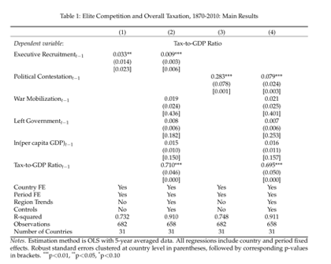
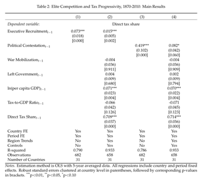
回归结果与作者的理论假设完全相符。精英竞争程度每增加一个单位，税收占GDP比重会增加1%-3.3%；而直接税占GDP比重会增加1.5%-7.3%。
五、稳健性检验
为了验证结果的有效性，避免因遗漏变量、反向因果等内生性问题带来的虚假结果，作者进行了花式稳健性检验。包括子样本分析，用数据平均值做替代分析、误差修正模型、增加额外控制变量、特征匹配、工具变量、格兰杰因果检验、使用财税能力作为因变量、将公共支出作为因变量等9种稳健性检验方式。这也让这篇文章连正文带稳健性检验的附录结果多达94页。
在这里我们简要向大家介绍一下作者使用工具变量法和格兰杰因果检验法进行稳健性检验的过程。
工具变量法
考虑到遗漏变量问题，作者使用工具变量法进行稳健性检验。用政府首脑的平均预期寿命作为政治竞争的工具变量。基本逻辑是，在非竞争性条件下的政府领导人可能会执政到自己年龄很大的时候。而政府首脑的年龄很难与误差项中的因素相关。这一工具变量的使用也通过了弱工具变量检验，采用2SLS回归，作者的结论依然显著。（关于工具变量法的介绍见：政治科学中的工具变量：一份读者使用指南）
格兰杰因果关系检验
考虑到财税发展与精英竞争可能的反向因果问题，作者使用了格兰杰因果检验。格兰杰因果检验的基本逻辑是，如果自变量真的影响了因变量而不是相反，当因变量的滞后项和自变量的滞后项同时存在于模型中时，自变量的滞后项就能够显著的预测因变量。根据这一检验，精英竞争滞后项通过了对财税发展影响显著性的F检验。而财税发展却难以通过格兰杰检验，与精英竞争呈显著关系。
六、未来展望
作者认为这一结论对接下来的研究提出了三个可供进一步讨论的方向。一是关注在什么条件下，之前处于低能力平衡（可参见 Francisco Garfias | 精英竞争和国家能力发展）的政府能够发展更高水平的财税能力。二是关注税收技术创新对早发工业化国家和后发工业化国家财税发展差异的作用。三是关注工业化时机与国家在其领土上拓展权力以及经济不平等的空间形式之间的关系。
编译：赵德昊
审读：陆屹洲
编辑：赵德昊


政文观止
微信扫一扫赞赏作者 __赞赏
已喜欢，对作者说句悄悄话
取消 __
发送给作者
发送
最多40字，当前共字
上一页 1/3 下一页
长按二维码向我转账
受苹果公司新规定影响，微信 iOS 版的赞赏功能被关闭，可通过二维码转账支持公众号。